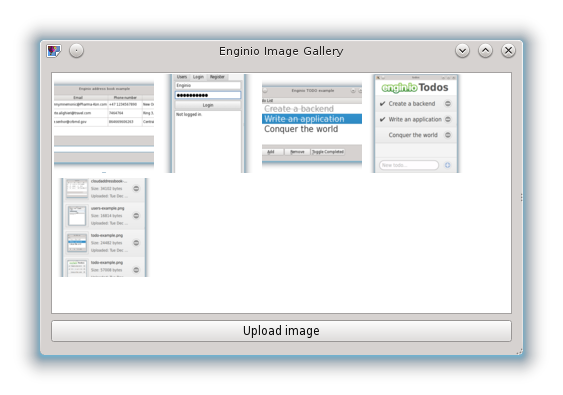

Enginio C++ Examples - Image Gallery
This is an example that demonstrates uploading and downloading of files in Enginio.
The user interface consists of a list of images and a button to upload more images.

Backend configuration
The Enginio backend needs to be set up in order to get this example working.
Go to the Enginio Dashboard and create a new backend with the Image Gallery template. The template will construct a new custom backend by executing these steps:
- Create a new object type objects.image (on the Object Types page).
Add two properties to the image object: name:"name", type: "String" and name: "file", type: "Ref" with target "files".
- Add a file processor by clicking the file property. Choose Image processor and in Variants enter:
{ "thumbnail": { "crop":"100x100" } }This JSON snippet triggers the server to generate thumbnails for all uploaded images. In the image gallery, the thumbnails will be used in the list view, and the full image will be shown when the thumbnail is clicked.
Copy the backend id from the Enginio dashboard, and use them when requested.
The Example Code
The example consists of three classes. ImageModel is a subclass of EnginioModel that exposes the images in the Qt::DecorationRole for the list view. In the MainWindow, a normal QListView is used to display the model contents. The ImageObject is a class that takes care of the download, and emits a signal when an image has been downloaded.
Files: